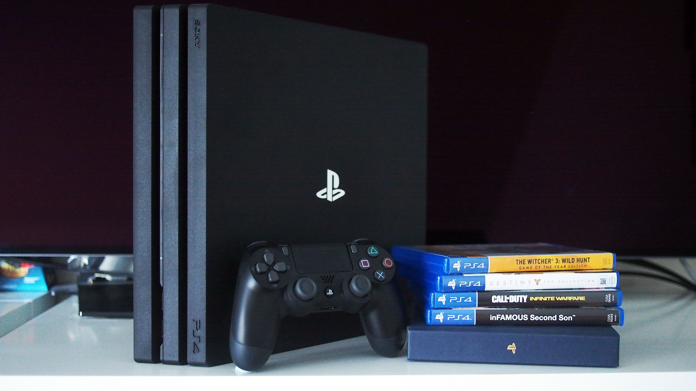

The PlayStation 4 or the PS4, first released in November 15, 2013. The PlayStation 4 was what people claim to be Sony's return to the throne in the console war. Many people argued that the PS3 had been beaten by the Xbox 360, Microsofts respective console. Although, with the coming of the PS4, it promised the strongest console to date, all new hardware and a huge jump in graphics, and with all these promises, Sony delivered. The PS4 gave users an incredibly fast experience, with seamless online play, and an unrivaled catalog of games. The PS4 seemed to set a new point in gaming, pushing the bar of amazing visuals, and immersive gaming experiences with the amazing sound design. Multiplayer expanded into something much more during this age of PlayStation, almost making online play with other friends a necessity for every game.The PS4 delivered on every level and left people satisfied for the years up till the road to the PS5.
